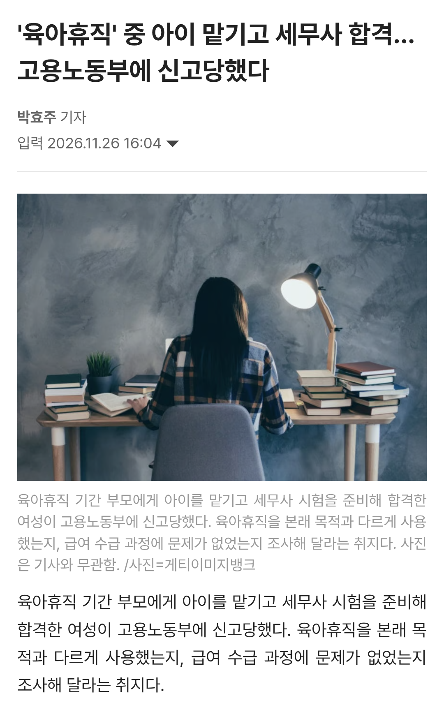

https://www.mt.co.kr/index.php/amp/society/2026/11/26/2026112615235254031
사건 경과
- 합격 수기 공개: 대학병원에서 12년간 근무한 30대 합격자가 육아휴직 연장 기간 세무사 시험을 준비해 합격했다고 밝혔습니다.
- 공부 시간과 돌봄 방식: 초기에는 아이가 잠든 시간 등을 활용해 공부하다가, 시험을 앞둔 약 3개월간은 아이를 부모님 댁에 맡기고 일요일 약 2시간만 보며 주당 70~80시간 공부했다고 언급했습니다.
- 민원 접수: 수기 확산 이후 일부 이용자가 국민신문고를 통해 실제 휴직 사용 실태와 육아휴직 급여 수급의 적정성을 조사해 달라며 고용노동부에 신고했습니다. 현재 고용노동부는 연말까지 고용보험 부정수급 집중신고기간을 운영 중입니다.
쟁점 및 법적 기준
- 찬반 논쟁: 자녀 양육 목적과 고용·급여 지원 취지를 훼손하고 다른 근로자와의 형평성에 어긋난다는 비판과, 가족의 도움을 받으며 자기계발·자격시험을 준비한 것 자체를 문제 삼기 어렵다는 반론이 맞서고 있습니다.
- 부정수급 판단 기준: 육아휴직 중 학업이나 자격시험 준비 자체가 곧바로 위법·부정수급으로 단정되는 것은 아닙니다. 다만 「남녀고용평등과 일·가정 양립 지원에 관한 법률 시행령」 제14조에 따라 자녀와 동거하지 않고 양육에 기여하지 않게 된 경우 7일 이내 사업주에게 알리도록 규정돼 있으며, 자녀 양육에 전혀 기여하지 않았다는 사실이 객관적으로 입증되면 정당한 육아휴직으로 보기 어렵다는 것이 고용노동부의 기본 입장입니다.
- 제재 수위: 거짓이나 그 밖의 부정한 방법으로 육아휴직 급여를 받은 경우 지급 제한, 반환명령, 최대 2배(사업주 공모 시 최대 5배) 추가 징수 및 3년 이하의 징역 또는 3,000만 원 이하의 벌금 등 형사처벌 대상이 될 수 있습니다.
지금도 대기업 간당간당하게 여자 뽑는데 더 적게 뽑기는 힘들거임.